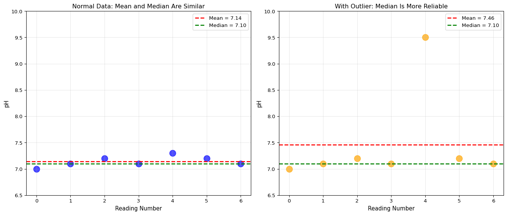
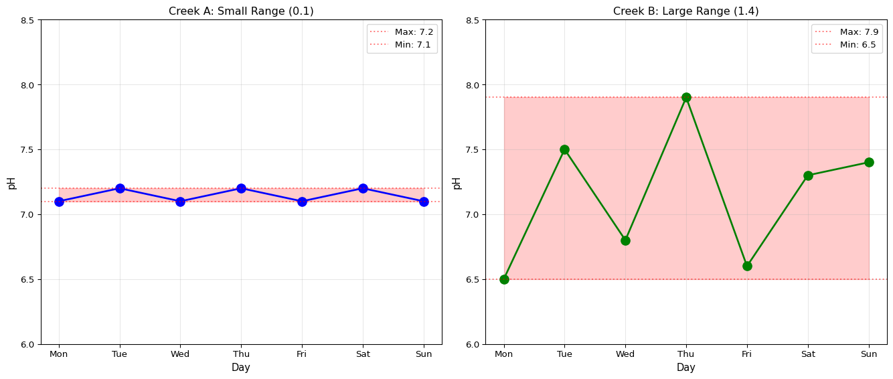
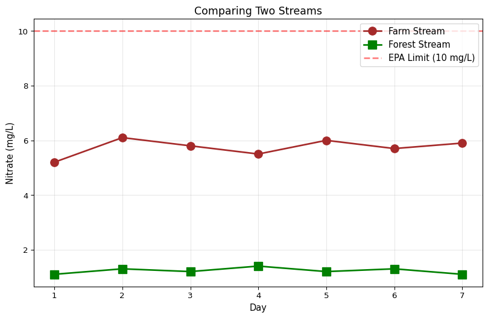

The Median and Range - Different Ways to Understand Data
A Problem with the Mean
Let’s say a scientist measures pH in a creek five times:
7.1, 7.2, 7.1, 7.2, 14.5
Wait… 14.5? That’s impossible! pH only goes up to 14, and natural water is never that high. The sensor must have glitched!
Let’s see what happens to the mean:
import numpy as np# Example pH readings with one bad measurementph_readings = [7.1, 7.2, 7.1, 7.2, 14.5]mean_ph = np.mean(ph_readings)print("pH readings:", ph_readings)print(f"Mean pH: {mean_ph:.2f}")print("\nThat doesn't seem right! The mean is 8.82, but most readings were around 7.1")
pH readings: [7.1, 7.2, 7.1, 7.2, 14.5]
Mean pH: 8.62
That doesn't seem right! The mean is 8.82, but most readings were around 7.1
That one weird number ruined our mean! We need a different tool…
Enter the Median!
The median is the middle number when you line them up in order.
Why it’s useful: One weird number doesn’t ruin it!
How to Find the Median
Step 1: Put the numbers in order from smallest to biggest Step 2: Find the middle number
import numpy as np# Same example readingsph_readings = [7.1, 7.2, 7.1, 7.2, 14.5]# Let's sort themsorted_readings =sorted(ph_readings)print("Original:", ph_readings)print("Sorted:", sorted_readings)# Find the median (middle number)median_ph = np.median(ph_readings)mean_ph = np.mean(ph_readings)print(f"\nMedian: {median_ph}")print(f"Mean: {mean_ph:.2f}")print("\nSee? The median (7.2) represents the 'typical' reading much better!")
Original: [7.1, 7.2, 7.1, 7.2, 14.5]
Sorted: [7.1, 7.1, 7.2, 7.2, 14.5]
Median: 7.2
Mean: 8.62
See? The median (7.2) represents the 'typical' reading much better!
When to Use Median vs Mean
Use Median When:
Use Mean When:
You have weird outliers
All data looks normal
Data is skewed (not symmetric)
Data is evenly spread
You want a “typical” value
You need to use ALL the data
Real-world example: House prices often use median because a few mansions can make the mean misleading!
Try It: Mean vs Median
Visualizing Mean vs Median
import matplotlib.pyplot as pltimport numpy as np# Two different example scenariosnormal_ph = [7.0, 7.1, 7.2, 7.1, 7.3, 7.2, 7.1]outlier_ph = [7.0, 7.1, 7.2, 7.1, 9.5, 7.2, 7.1] # One bad readingfig, (ax1, ax2) = plt.subplots(1, 2, figsize=(14, 6))# Normal dataax1.scatter(range(len(normal_ph)), normal_ph, s=150, alpha=0.7, color='blue')ax1.axhline(y=np.mean(normal_ph), color='red', linestyle='--', linewidth=2, label=f'Mean = {np.mean(normal_ph):.2f}')ax1.axhline(y=np.median(normal_ph), color='green', linestyle='--', linewidth=2, label=f'Median = {np.median(normal_ph):.2f}')ax1.set_xlabel('Reading Number', fontsize=11)ax1.set_ylabel('pH', fontsize=11)ax1.set_title('Normal Data: Mean and Median Are Similar', fontsize=12)ax1.legend()ax1.grid(True, alpha=0.3)ax1.set_ylim(6.5, 10)# With outlierax2.scatter(range(len(outlier_ph)), outlier_ph, s=150, alpha=0.7, color='orange')ax2.axhline(y=np.mean(outlier_ph), color='red', linestyle='--', linewidth=2, label=f'Mean = {np.mean(outlier_ph):.2f}')ax2.axhline(y=np.median(outlier_ph), color='green', linestyle='--', linewidth=2, label=f'Median = {np.median(outlier_ph):.2f}')ax2.set_xlabel('Reading Number', fontsize=11)ax2.set_ylabel('pH', fontsize=11)ax2.set_title('With Outlier: Median Is More Reliable', fontsize=12)ax2.legend()ax2.grid(True, alpha=0.3)ax2.set_ylim(6.5, 10)plt.tight_layout()plt.show()print("Notice: The outlier pulls the mean up, but the median stays put!")

Notice: The outlier pulls the mean up, but the median stays put!
Even vs Odd Number of Values
When you have an odd number: The median is the middle number Example: [7.0, 7.1, 7.2, 7.3, 7.4] → Median is 7.2 (the 3rd number)
When you have an even number: The median is the average of the two middle numbers Example: [7.0, 7.1, 7.2, 7.3] → Median is (7.1 + 7.2) ÷ 2 = 7.15
import numpy as np# Odd number of readingsodd_example = [7.0, 7.1, 7.2, 7.3, 7.4]print("Odd number of values:", odd_example)print(f"Median: {np.median(odd_example)}")# Even number of readingseven_example = [7.0, 7.1, 7.2, 7.3]print("\nEven number of values:", even_example)print(f"Median: {np.median(even_example)}")
Odd number of values: [7.0, 7.1, 7.2, 7.3, 7.4]
Median: 7.2
Even number of values: [7.0, 7.1, 7.2, 7.3]
Median: 7.15
The Range: How Spread Out?
The range is the simplest way to see how spread out your data is:
Range = Biggest number - Smallest number
# Two example creeks measured over a weekcreek_a_ph = [7.1, 7.2, 7.1, 7.2, 7.1, 7.2, 7.1] # Very stablecreek_b_ph = [6.5, 7.5, 6.8, 7.9, 6.6, 7.3, 7.4] # All over the placerange_a =max(creek_a_ph) -min(creek_a_ph)range_b =max(creek_b_ph) -min(creek_b_ph)print("Creek A pH readings:", creek_a_ph)print(f" Min: {min(creek_a_ph)}, Max: {max(creek_a_ph)}")print(f" Range: {range_a}")print("\nCreek B pH readings:", creek_b_ph)print(f" Min: {min(creek_b_ph)}, Max: {max(creek_b_ph)}")print(f" Range: {range_b}")print(f"\nCreek B has {range_b/range_a:.1f} times more variability!")
Creek A pH readings: [7.1, 7.2, 7.1, 7.2, 7.1, 7.2, 7.1]
Min: 7.1, Max: 7.2
Range: 0.10000000000000053
Creek B pH readings: [6.5, 7.5, 6.8, 7.9, 6.6, 7.3, 7.4]
Min: 6.5, Max: 7.9
Range: 1.4000000000000004
Creek B has 14.0 times more variability!
Visualizing Range
import matplotlib.pyplot as pltcreek_a_ph = [7.1, 7.2, 7.1, 7.2, 7.1, 7.2, 7.1]creek_b_ph = [6.5, 7.5, 6.8, 7.9, 6.6, 7.3, 7.4]fig, (ax1, ax2) = plt.subplots(1, 2, figsize=(14, 6))days = ['Mon', 'Tue', 'Wed', 'Thu', 'Fri', 'Sat', 'Sun']# Creek Aax1.plot(days, creek_a_ph, marker='o', markersize=10, linewidth=2, color='blue')ax1.axhline(y=max(creek_a_ph), color='red', linestyle=':', alpha=0.5, label=f'Max: {max(creek_a_ph)}')ax1.axhline(y=min(creek_a_ph), color='red', linestyle=':', alpha=0.5, label=f'Min: {min(creek_a_ph)}')ax1.fill_between(range(len(days)), min(creek_a_ph), max(creek_a_ph), alpha=0.2, color='red')ax1.set_xlabel('Day', fontsize=11)ax1.set_ylabel('pH', fontsize=11)ax1.set_title(f'Creek A: Small Range ({max(creek_a_ph) -min(creek_a_ph):.1f})', fontsize=12)ax1.legend()ax1.grid(True, alpha=0.3)ax1.set_ylim(6, 8.5)# Creek Bax2.plot(days, creek_b_ph, marker='o', markersize=10, linewidth=2, color='green')ax2.axhline(y=max(creek_b_ph), color='red', linestyle=':', alpha=0.5, label=f'Max: {max(creek_b_ph)}')ax2.axhline(y=min(creek_b_ph), color='red', linestyle=':', alpha=0.5, label=f'Min: {min(creek_b_ph)}')ax2.fill_between(range(len(days)), min(creek_b_ph), max(creek_b_ph), alpha=0.2, color='red')ax2.set_xlabel('Day', fontsize=11)ax2.set_ylabel('pH', fontsize=11)ax2.set_title(f'Creek B: Large Range ({max(creek_b_ph) -min(creek_b_ph):.1f})', fontsize=12)ax2.legend()ax2.grid(True, alpha=0.3)ax2.set_ylim(6, 8.5)plt.tight_layout()plt.show()print("The shaded area shows the range - how much the readings vary")

The shaded area shows the range - how much the readings vary
Try It: Analyze a River
Understanding Your Results
When you analyze water quality data, think about:
Is the mean or median more useful?
If you have outliers → use median
If data looks normal → mean is fine
What does the range tell you?
Small range = stable conditions (good!)
Large range = something is changing (investigate!)
Are all readings in the safe zone?
pH: 6.5 to 8.5
Nitrate: less than 10 mg/L
Comparing Two Streams
import numpy as npimport matplotlib.pyplot as plt# Example: Stream near a farm vs stream in a forestfarm_stream_nitrate = [5.2, 6.1, 5.8, 5.5, 6.0, 5.7, 5.9]forest_stream_nitrate = [1.1, 1.3, 1.2, 1.4, 1.2, 1.3, 1.1]# Calculate statsprint("Farm Stream:")print(f" Median nitrate: {np.median(farm_stream_nitrate):.2f} mg/L")print(f" Range: {max(farm_stream_nitrate) -min(farm_stream_nitrate):.2f} mg/L")print("\nForest Stream:")print(f" Median nitrate: {np.median(forest_stream_nitrate):.2f} mg/L")print(f" Range: {max(forest_stream_nitrate) -min(forest_stream_nitrate):.2f} mg/L")# Visualizefig, ax = plt.subplots(figsize=(10, 6))days =list(range(1, 8))ax.plot(days, farm_stream_nitrate, marker='o', markersize=10, linewidth=2, label='Farm Stream', color='brown')ax.plot(days, forest_stream_nitrate, marker='s', markersize=10, linewidth=2, label='Forest Stream', color='green')ax.axhline(y=10, color='red', linestyle='--', linewidth=2, alpha=0.5, label='EPA Limit (10 mg/L)')ax.set_xlabel('Day', fontsize=11)ax.set_ylabel('Nitrate (mg/L)', fontsize=11)ax.set_title('Comparing Two Streams', fontsize=13)ax.legend(fontsize=11)ax.grid(True, alpha=0.3)plt.show()print("\nWhat do you notice?")print("- Farm stream has higher nitrate (fertilizer runoff)")print("- Forest stream has lower, more stable nitrate")print("- Both are safe (below 10 mg/L) but farm stream is getting close!")
Farm Stream:
Median nitrate: 5.80 mg/L
Range: 0.90 mg/L
Forest Stream:
Median nitrate: 1.20 mg/L
Range: 0.30 mg/L

What do you notice?
- Farm stream has higher nitrate (fertilizer runoff)
- Forest stream has lower, more stable nitrate
- Both are safe (below 10 mg/L) but farm stream is getting close!
Range vs Standard Deviation
You learned about standard deviation in the last lesson. How is it different from range?
Range
Standard Deviation
Only uses 2 numbers (min & max)
Uses ALL the data
Easy to calculate
More complex
Affected by outliers
Also affected by outliers
Quick and simple
More informative
Think of it this way: - Range = “What’s the biggest difference I could see?” - Standard Deviation = “How far are numbers typically from the average?”
import numpy as np# Example to show the differencedata = [7.0, 7.1, 7.2, 7.1, 7.2, 7.3, 7.1]range_val =max(data) -min(data)std_val = np.std(data)print("Data:", data)print(f"Range: {range_val:.2f}")print(f"Standard Deviation: {std_val:.3f}")print("\nBoth tell us about spread, but in different ways!")
Data: [7.0, 7.1, 7.2, 7.1, 7.2, 7.3, 7.1]
Range: 0.30
Standard Deviation: 0.090
Both tell us about spread, but in different ways!
Your Future: Real Data Collection
When you deploy sensor buoys in streams and creeks, you might see patterns like: - Daily cycles: pH changes from morning to evening - Weekly patterns: Different on weekdays vs weekends - Storm events: Sudden spikes in nitrate after heavy rain
The median and range will help you understand what’s “normal” vs what’s unusual!
Right now you’re practicing with example data, but soon you’ll analyze your OWN measurements using these same skills! 🌊
Quick Reference
Statistic
What It Tells You
How to Calculate
Mean
Average value
np.mean(data)
Median
Middle value
np.median(data)
Range
How spread out
max(data) - min(data)
Min
Smallest value
min(data)
Max
Largest value
max(data)
Practice Challenge
Here’s a challenge for you! Look at these nitrate readings:
[3.1, 3.2, 3.0, 18.5, 3.3, 3.1, 3.2]
Before running code, think about: 1. Is there an outlier? 2. Will the mean or median be more useful? 3. What might cause that high reading?
Key Takeaways
🎯 Median = Middle value when sorted (not affected by outliers!)
📏 Range = Biggest - Smallest (simple way to see spread)
✅ Use median when you have weird outliers or sensor errors
✅ Use range to quickly see how variable your data is
🔍 When data is normal, mean and median are similar
⚠️ When there are outliers, median is more reliable
🌊 Real stream data will have outliers - now you know how to handle them!
Next lesson: We’ll learn how to spot those weird outliers and decide if they’re real pollution events or just sensor errors!